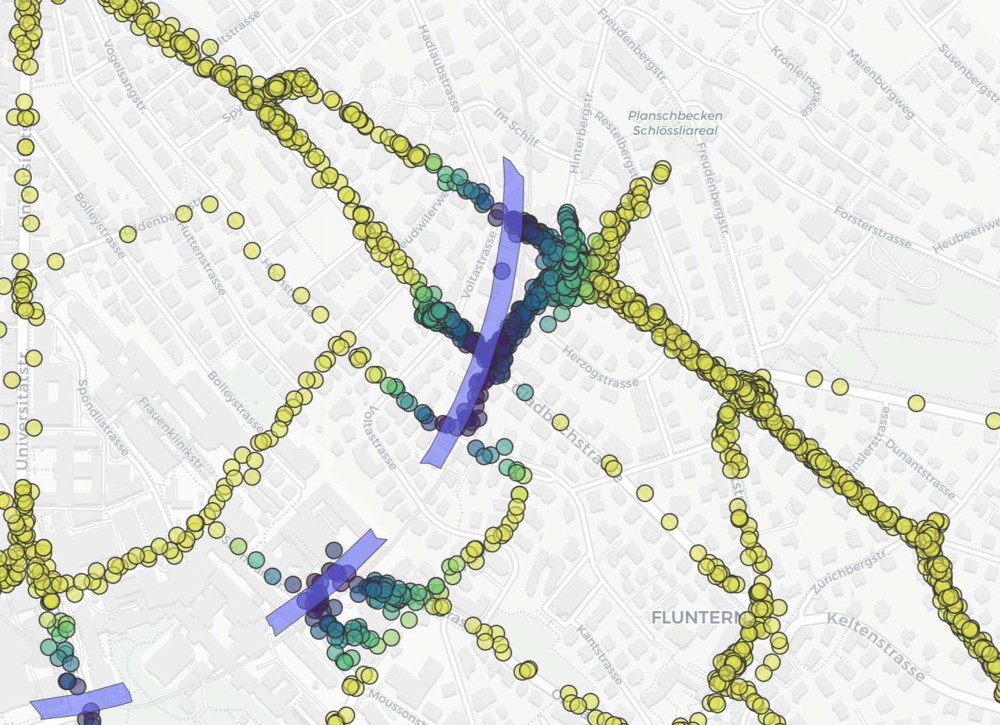
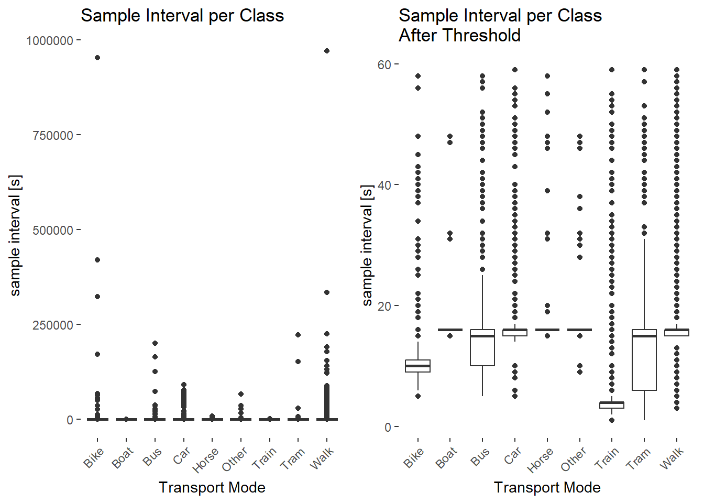
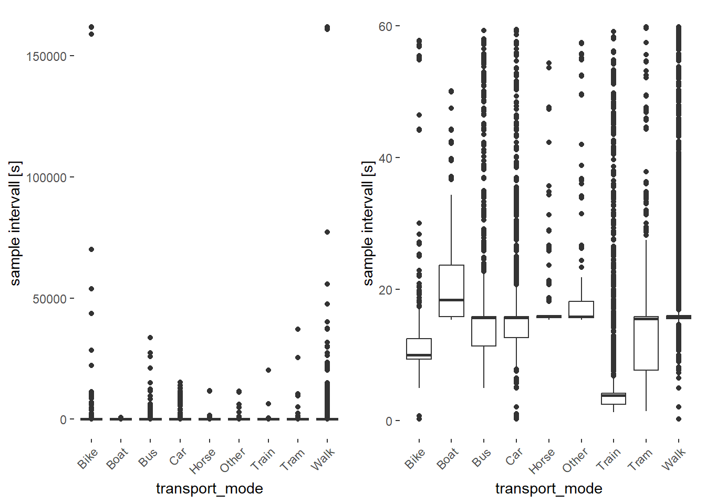
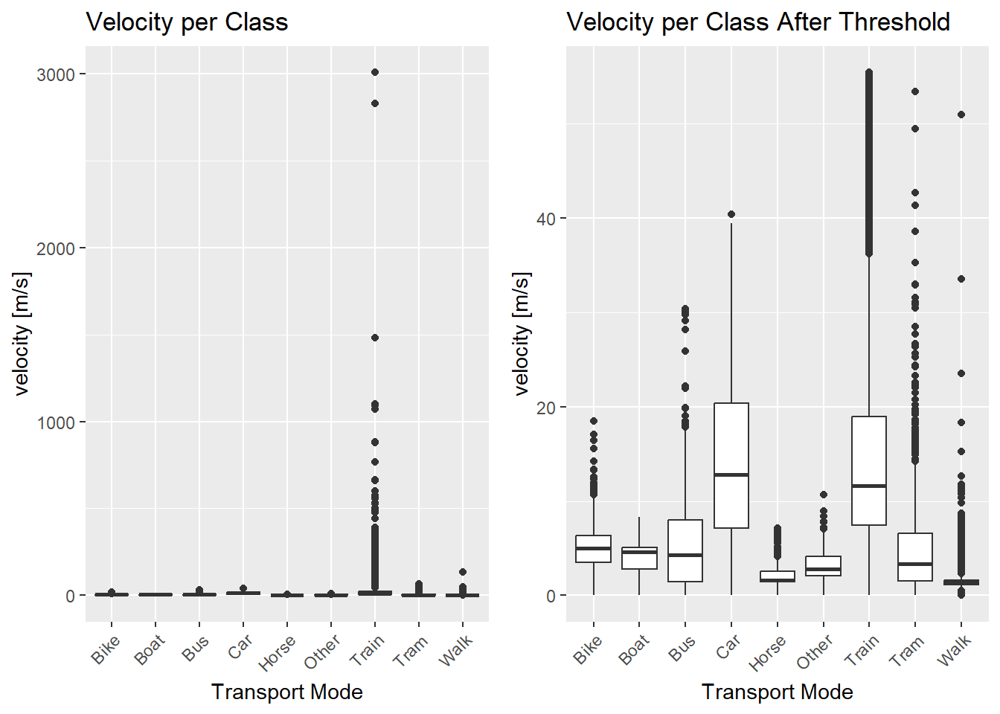
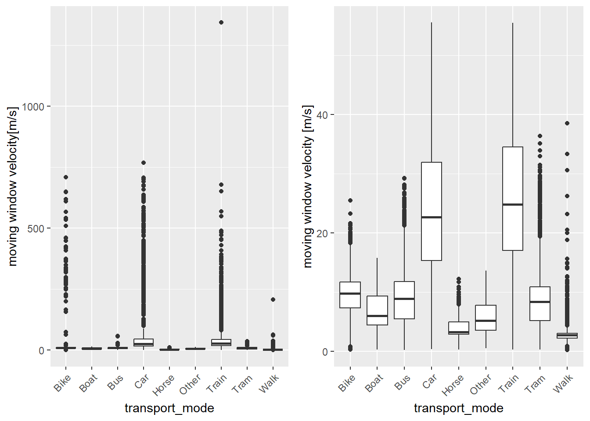
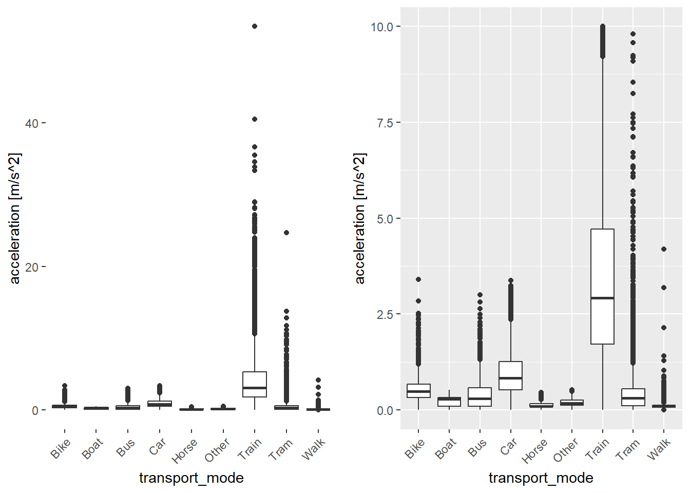
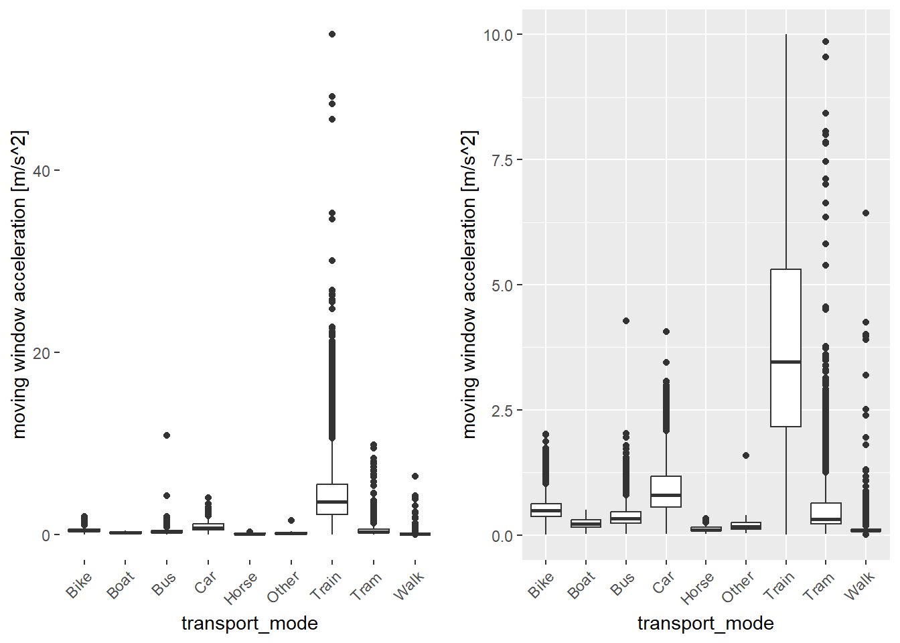
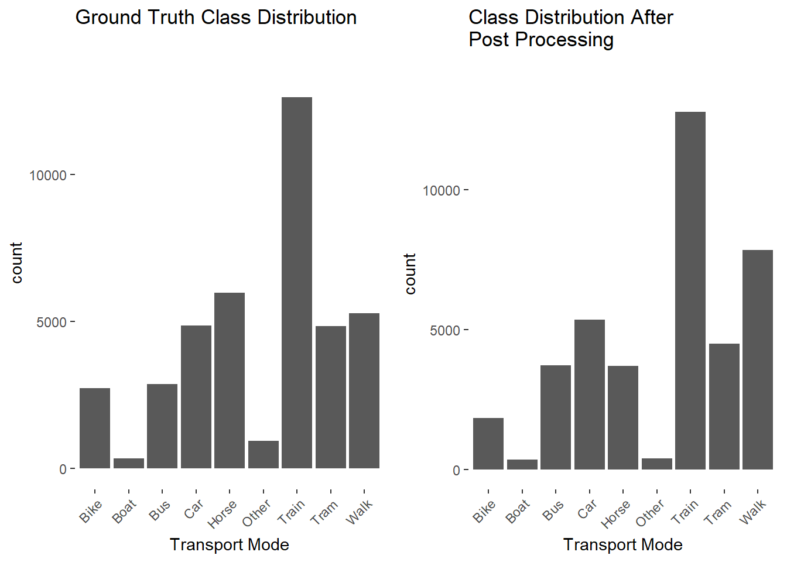

Automated Transport Mode Detection of GPS Tracking Data
Author
Cyril Geistlich, Micha Franz
Abstract
This project aims to investigate key factors and features in GPS tracking data to differentiate transportation vehicles. Machine learning is applied to automate transportation mode detection using spatial, temporal, and attribute analysis. Manual verification of results ensures accuracy. The findings contribute to computational movement analysis and automated transportation mode detection.
1. Introduction
In recent years, the spread of GPS-enabled devices and progress in location-based technologies have generated vast amounts of GPS tracking data. This data holds large significant potential for extracting insights and to improve our understanding of human mobility patterns. One main application in this field is the differentiation of transportation modes. This can benefit various domains such as traffic management or urban planning. Determining the mode of transportation from GPS tracking data presents several challenges. With the ubiquitous increase of GPS tracking through smartphones and other technical devices, it’s too time consuming and expensive to manually annotate data and also prone to human error or biases. This leads to the following two research questions:
What are the key factors and features that can be extracted from GPS tracking data to differentiate between different types of transportation modes?
How can machine learning techniques be applied to GPS tracking data to automate the detection of the mode of transportation and which accuracies can be achieved by different machine learning algorithms?
The project will focus on exploring spatial and temporal aspects to extract key factors from GPS tracking data, such as velocity, sinuosity or angles. Additionally, spatial context in the form of traffic networks and land cover is added to the data in order to improve the accuracy of transportation mode detection. Machine learning algorithms will be tested and employed to automate the classification of transportation modes. An accurate algorithm is aimed to be found by training and evaluating different models on labeled data. These models include random forests, support vector machines or neural networks. To ensure the accuracy of the models, a subset of the classified data is used to validate the performance. By comparing the results of the automated classification with ground truth data, the project aims to assess the achieved accuracies of different machine learning algorithms and identify areas for improvement.
2. Data
The main data are the GPS tracking data, which were recorded through the Posmos App via smartphone throughout a time span of approximately 1.5 months by the two authors and from the available data pool. The complete collected data was manually labelled to ensure a valid ground truth. Further, spatial context data such as the Swiss road network, tram network,1 train network2 and the bus network of the cantons of Zurich3 and Bern.4 (Note: There is no official data set for the entire Swiss bus network according to the federal bureau of transport. Thus the available ones for Bern and Zurich were used, where a significant amount of data points pertaining to bus usage were collected). To facilitate the detection of the transportation mode boat, land cover data containing all Swiss waters was also used.5
Code
library("dplyr")library("sf")library("readr") library("ggplot2")library("mapview")library("lubridate")library("zoo") library("caret")library("LearnGeom") # to calculate anglelibrary("geosphere") # to calculate distanceslibrary("RColorBrewer") # to create custom color paletteslibrary("ggcorrplot") # for correlation matrixlibrary("ROSE")library("gridExtra")
Code
# creates lines out of points, used for visualisation purposespoint2line <-function(points){ geometries <-st_cast(st_geometry(points %>%select(geometry)), "POINT") n <-length(geometries) -1 linestrings <-lapply(X =1:n, FUN =function(x) { pair <-st_combine(c(geometries[x], geometries[x +1])) line <-st_cast(pair, "LINESTRING")return(line) }) multilinetring <-st_multilinestring(do.call("rbind", linestrings)) df <-data.frame(linestrings[1])for (i in2:length(linestrings)){ temp <-data.frame(linestrings[i]) df <-rbind(df, temp) } sf_lines <- df %>%st_as_sf()}un_col <-function(df){return(length(unique(df)))}
Code
# read personal tracking dataposmo_micha_truth_csv <-read.delim("data/manually_labelled/posmo_20230502_to_20230613_m.csv",sep=",") posmo_cyril_truth_csv <-read.delim("data/manually_labelled/posmo_2023-05-01T00_00_00+02_00-2023-06-26T23_59_59+02_00.csv",sep=",") posmo_micha_csv <-read.delim("data/posmo_labelled/posmo_20230502_to_20230613_p.csv",sep=",") # read tracking data from poolposmo_pool_1 <-read.delim("data/manually_labelled/posmo.csv",sep=",") %>%tail(612) # last 250 data points are not correctly labelledposmo_pool_2 <-read.delim("data/manually_labelled/posmo_2.csv",sep=",") posmo_pool_3 <-read.delim("data/manually_labelled/posmo_BuJa.csv",sep=",")
process_posmo_data <-function(posmo_data) { # function with data cleaning steps# Convert to sf object posmo_data <- posmo_data %>%st_as_sf(coords =c("lon_x", "lat_y"), crs =4326) %>%st_transform(crs =2056)# Remove unwanted columns posmo_data <- posmo_data[, -c(1, 3, 4)]# Fix Timestamp posmo_data$datetime <-ymd_hms(posmo_data$datetime) +hours(2)# Add ID to rows posmo_data <- posmo_data %>%mutate(id =row_number())# remove duplicate time values posmo_data <- posmo_data[!duplicated(posmo_data$datetime), ]# remove subsequent duplicate location (person wasn't moving) posmo_data <- posmo_data %>%filter(geometry !=lead(geometry))return(posmo_data)}
3. Methods
3.1 Preprocessing
When tracking a person throughout the day using GPS data, there are instances where the person appears to be stationary, such as when in an office or at a university. However, due to GPS inaccuracies, these stationary points may not appear at the exact same location and can exhibit erratic movement patterns. The accuracy of GPS signals is often compromised in dense buildings, amplifying this phenomenon. Figure XXX (screen noch machen) shows an example of this phenomenon around the Irchel campus of the University of Zurich. As a result, parameters like velocity and step length can show values that are typically associated with other categories. To address this issue, two approaches have been employed.
The first approach involves analyzing the angles between consecutive points. Typically, these angles are significantly smaller for stationary points compared to other movements. By visually determining a threshold angle (X), the data set is filtered to remove all data points with angles smaller than X. This process needs to be repeated iteratively until no angles below the threshold remain, as the removal of data points alters the angles between the remaining points. Figure XXX (screen noch machen) shows several iterations, removing more and more points with an angle below the threshold. One problem of this approach is that in some cases small angles can also emerge naturally and not due to an error. These points are then falsely removed. There is a special case of this problem in the context of a U-turn or a sharp change in direction, the angle between the points just before and after the turn may indeed be small. Consequently, the removal of these points leads to a re-calculation of angles, which can result in the subsequent removal of additional points and the loss of significant segments. Figure XXX demonstrates this phenomenon. However, through visual inspection of a representative amount of data, this only occurs rarely.
The second approach considers the distance between the current point and a set number of preceding and consecutive points. A point is deemed static if the maximum distance between that point and any of the set number of preceding or consecutive points exceeds a predefined distance threshold. However, this approach may unintentionally remove non-static data points, particularly when a person is walking slowly and numerous data points are recorded within a small distance. Adjusting the distance threshold or the number of preceding and consecutive points can mitigate this issue, but it requires striking a balance between filtering out false movements and retaining genuine data. The sampling rate of Posmos was set to 15 seconds, but in some cases, data points were recorded every three seconds. Obviously, this enhances the the chances of removing data in the just described way. Since this behavior was not expected and only discovered late in the process, the point exhibiting an abnormally short sampling interval were not removed prior to preprocessing.
Finding the optimal compromise between these filtering approaches involves considering the specific characteristics of the tracked person’s movements and the quality of the GPS data. By iteratively applying the angle-based filtering and analyzing the distance to surrounding points, a more accurate identification of stationary periods can be achieved, mitigating the impact of GPS inaccuracies and preserving the integrity of the tracking data. Thus, the thresholds were set by trial and error.
Code
filterStaticByDistance <-function(data, threshold_distance, consecutive_points) {require(geosphere)# transform to WGS84, necessary to calculate distance using geosphere data <- data %>%st_transform(4326)# Extract coordinates from the geometry coords <-data.frame(st_coordinates(data)) data$longitude <- coords$X data$latitude <- coords$Y# Calculate distances to preceding and consecutive points distances <-numeric(nrow(data))for (i in (consecutive_points +1):(nrow(data) - consecutive_points)) { next_points <- coords[(i +1):(i + consecutive_points), ] prev_points <- coords[(i -1):(i - consecutive_points), ] all_points <-rbind(next_points, prev_points) distances[i] <-max(geosphere::distGeo(coords[i, ], all_points)) }# Filter out points where the maximum distance exceeds the threshold filtered_data <- data[distances >= threshold_distance | distances ==0, ] # keep first/last values which are 0# Transform back to LV95 filtered_data <- filtered_data %>%st_transform(2056)return(list(filtered_data = filtered_data, distances = distances)) # distances are just needed for testing thresholds}
Code
getAngle <-function(coords) { angles <-numeric(nrow(coords)) # Initialize angles as a numeric vector angles[1] =NA# first point can't have an anglefor (i in2:(nrow(coords) -1)) { # calculate the angle for 3 consecutive points, similar to lag/lead angle <-Angle( #function from library LearnGeomc(coords[i -1, "X"], coords[i -1, "Y"]),c(coords[i, "X"], coords[i, "Y"]),c(coords[i +1, "X"], coords[i +1, "Y"]) ) angles[i] <- angle # Assign the calculated angle to the corresponding index in angles } angles[nrow(coords)] =NA# last point cant have an anglereturn(c(angles))}
Code
filterStaticByAngle <-function(working_dataset, angleTreshold){ coords <-data.frame(st_coordinates(working_dataset), working_dataset$id) working_dataset$angle <-getAngle(coords) min_angle <-min(working_dataset$angle, na.rm = T)while (min_angle <= angleTreshold) { # iteratively filter out tight angles until none smaller 60 are left working_dataset <- working_dataset %>%filter(is.na(angle) | angle > angleTreshold) # exclude first and last value (=NA) coords <-data.frame(st_coordinates(working_dataset), working_dataset$id) working_dataset$angle <-getAngle(coords) min_angle <-min(working_dataset$angle, na.rm = T) }return(working_dataset)}
Code
# result <- filterStaticByDistance(working_dataset, threshold_distance = 60, consecutive_points = 5)# filteredByDistance <- result$filtered_data# working_dataset$distances <- result$distances # just for testing threshold values# filteredByAngle <- filterStaticByAngle(working_dataset, 60)# filtertedByDistance_and_Angle <- filterStaticByAngle(filteredByDistance, 60)
Due to similar movement parameters for transportation modes it is a particularly challenging task to automatically classify transportation modes using only movement parameters. Bus and tram in cities for example, exhibit very similar characteristics. To facilitate the classification task, the data was enriched with spatial context data in the form of various networks and land cover, as mentioned in the data description. By incorporating this spatial context data, the classification process can be enhanced by considering the surrounding environment in which the transportation modes operate. For every data point, the closest distance to the difference networks and water bodies was calculated. In some cases, the calculated distances to these networks or water bodies could be extremely large. Including such large values in the data set would lead to a significant span of values, potentially overshadowing smaller differences within cities. To avoid this issue, a decision was made to set a maximum distance of 100m. Any distance beyond 100m was assigned a value of 100m. By setting this threshold, the data set ensures that distances beyond 100m are treated as equal, effectively reducing the influence of extremely large distances on the classification task.
It is important to note that the distance calculation in the data set may not always provide an accurate representation of real distances, especially in cases involving tunnels or underground passages with overlaying data points. An example of this can be seen below, where a tunnel leads close underneath the house of one of the authors and wrong distance proximites are calculated.

Code
# since some of the networks are extremly large data sets, a buffer of all data points were intersected with the networks, and only the network segments that intersected were used to calculate the distancedata_AOI <-st_buffer(working_dataset, 50) %>%st_union()tram_netz_AOI <-st_intersection(tram_netz, data_AOI)working_dataset$distance_tram <-as.numeric(st_distance(working_dataset, tram_netz_AOI))working_dataset$distance_tram <-ifelse(working_dataset$distance_tram >100, 100, working_dataset$distance_tram)zug_netz_AOI <-st_intersection(zug_netz, data_AOI)working_dataset$distance_zug <-as.numeric(st_distance(working_dataset, zug_netz_AOI))working_dataset$distance_zug <-ifelse(working_dataset$distance_zug >100, 100, working_dataset$distance_zug)gewaesser_AOI <-st_intersection(gewaesser, data_AOI)working_dataset$distance_gewaesser <-as.numeric(st_distance(working_dataset, gewaesser_AOI))working_dataset$distance_gewaesser <-ifelse(working_dataset$distance_gewaesser >100, 100, working_dataset$distance_gewaesser)bus_netz_AOI <-st_intersection(bus_netz, data_AOI)working_dataset$distance_bus <-as.numeric(st_distance(working_dataset, bus_netz_AOI))working_dataset$distance_bus <-ifelse(working_dataset$distance_bus >100, 100, working_dataset$distance_bus)working_dataset$distance_strasse <-as.numeric(st_distance(working_dataset, strassen))working_dataset$distance_strasse <-ifelse(working_dataset$distance_strasse >100, 100, working_dataset$distance_strasse)
# Save full dataset as csvworking_dataset <-st_drop_geometry(working_dataset)posmo_pool <-st_drop_geometry(posmo_pool)write.csv(working_dataset, file ="data/full_working_dataset.csv", row.names = F)write.csv(posmo_pool, file ="data/full_posmo_pool_dataset.csv", row.names = F)
3.4 Class Distribution Overview
Code
working_dataset <-read.delim("data/full_working_dataset.csv",sep=",", header = T) posmo_pool <-read.delim("data/full_posmo_pool_dataset.csv",sep=",", header = T) working_dataset <-rbind(working_dataset, posmo_pool)working_dataset <-na.omit(working_dataset)# Show class distributionggplot(working_dataset) +geom_bar(aes(x = transport_mode)) +theme(axis.text.x =element_text(angle =45, hjust =1)) +ggtitle("Class Distribution over Unfiltered Data Set") +xlab("Transport Mode") +ylab("Count")
The distribution shows that many classes are very poorly represented in the data. Unclassified data is removed and aggregated. The underrepresented transport modes are moved to the class “Other”.
Bike Boat Bus Car Horse Other Train Tram Walk
2120 417 4100 7272 3866 468 18581 4732 10281
The dotted red line lies at a count of 500, representing the desired sample count for the following under sampling of our data set.
3.5 Sampling Interval
The sampling intervals were found to be highly inconsistent. Many large sampling intervals originate from the tracked person being stationary. Therefore the sampling interval is limited to 60 seconds. No re-sampling to equalize the sampling interval is undertaken, to preserve the GPS position and the calculated parameters for each data point, since with large sampling intervals the calculated movement parameters become inaccurate and unrepresentative of the transport mode. After applying the threshold the actual sampling interval of 10, respective 15 seconds can be seen in the box plot.
Code
boxplot_diff_s <-ggplot(working_dataset,aes(x = transport_mode, y = diff_s)) +geom_boxplot() +theme(axis.text.x =element_text(angle =45, hjust =1)) +ylab("sample interval [s]") +xlab("Transport Mode") +ggtitle("Sample Interval per Class")# Set threshold for parametersworking_dataset <- working_dataset[working_dataset$diff_s <60,]boxplot_diff_s_after <-ggplot(working_dataset, aes(x = transport_mode, y = diff_s)) +geom_boxplot() +theme(axis.text.x =element_text(angle =45, hjust =1)) +ylab("sample interval [s]") +xlab("Transport Mode") +ggtitle("Sample Interval per Class \nAfter Threshold")# Display the plots side by sidegrid.arrange(boxplot_diff_s, boxplot_diff_s_after, nrow =1)

After the initial removal of sampling intervals larger than 60 seconds we repeat the step for the moving window sampling intervals.
Code
boxplot_diff_s_mean <-ggplot(working_dataset, aes(x = transport_mode, y = diff_s_mean)) +geom_boxplot() +theme(axis.text.x =element_text(angle =45, hjust =1)) +ylab("sample intervall [s]")# Set threshold for parametersworking_dataset <- working_dataset[working_dataset$diff_s_mean <60,]boxplot_diff_s_mean_after <-ggplot(working_dataset, aes(x = transport_mode, y = diff_s_mean)) +geom_boxplot() +theme(axis.text.x =element_text(angle =45, hjust =1)) +ylab("sample intervall [s]")# Display the plots side by sidegrid.arrange(boxplot_diff_s_mean, boxplot_diff_s_mean_after, nrow =1)

3.6 Parameter Thresholds
3.6.1 Velocity
The velocity attribute shows some outliers for the train class and walking class. The threshold for maximum velocity is set to 55.55 m/s (200km/h ), as no transport mode in our analysis is expected to exceed such velocity. One exception are airplanes, but with only very few data points there is no benefit in including higher velocities. After setting the threshold some obvious outliers remain for the walking class. Reasons for such outliers in the calculated velocity could be:
Wrong Classification, even though the data is verified.
GPS inaccuracies, where the GPS point location is “jumping” creating very inaccurate, zigzagging tracking data.
Code
boxplot_velocity <-ggplot(working_dataset, aes(x = transport_mode, y = velocity)) +geom_boxplot() +theme(axis.text.x =element_text(angle =45, hjust =1)) +ylab("velocity [m/s]") +xlab("Transport Mode") +ggtitle("Velocity per Class")# Set threshold for parametersworking_dataset <- working_dataset[working_dataset$velocity <55.55,]boxplot_velocity_after <-ggplot(working_dataset, aes(x = transport_mode, y = velocity)) +geom_boxplot() +theme(axis.text.x =element_text(angle =45, hjust =1)) +ylab("velocity [m/s]") +xlab("Transport Mode") +ggtitle("Velocity per Class After Threshold")# Display the plots side by sidegrid.arrange(boxplot_velocity, boxplot_velocity_after, nrow =1)

3.6.2 Moving Window Velocity
The moving window velocity shows less extreme outliers. The number of outliers can be reduced further by removing setting the trheshold to 55.5m/s (200km/h). After applying the threshold classes with similar average velocities can be identified. This might already be an indicator for classes which are difficult to distinguish using classification methods.
Code
boxplot_velocity_mean <-ggplot(working_dataset, aes(x = transport_mode, y = velocity_mean)) +geom_boxplot() +theme(axis.text.x =element_text(angle =45, hjust =1)) +ylab("moving window velocity[m/s]")# Set threshold for parametersworking_dataset <- working_dataset[working_dataset$velocity_mean <55.55,]boxplot_velocity_mean_after <-ggplot(working_dataset, aes(x = transport_mode, y = velocity_mean)) +geom_boxplot() +theme(axis.text.x =element_text(angle =45, hjust =1)) +ylab("moving window velocity [m/s]")# Display the plots side by sidegrid.arrange(boxplot_velocity_mean, boxplot_velocity_mean_after, nrow =1)

3.6.3 Acceleration
The acceleration threshold is set to 10m/s^2, as for this classification is considered to be the maximum possible acceleration for all classes. The distribution of the classes is similar to the velocities. In the parameter correlation analysis strong correlation between velocity and acceleration was found.
Code
boxplot_acceleration <-ggplot(working_dataset, aes(x = transport_mode, y = acceleration)) +geom_boxplot() +theme(axis.text.x =element_text(angle =45, hjust =1)) +ylab("acceleration [m/s^2]")# Set threshold for parametersworking_dataset <- working_dataset[working_dataset$acceleration <10,]boxplot_acceleration_after <-ggplot(working_dataset, aes(x = transport_mode, y = acceleration)) +geom_boxplot() +theme(axis.text.x =element_text(angle =45, hjust =1)) +ylab("acceleration [m/s^2]")# Display the plots side by sidegrid.arrange(boxplot_acceleration, boxplot_acceleration_after, nrow =1)

3.6.4 Moving Window Acceleration
The acceleration threshold is set to \(10m/s^2\), as for the single point acceleration values.
Code
boxplot_acceleration_mean <-ggplot(working_dataset, aes(x = transport_mode, y = acceleration_mean)) +geom_boxplot() +theme(axis.text.x =element_text(angle =45, hjust =1)) +ylab("moving window acceleration [m/s^2]")# Set threshold for parametersworking_dataset <- working_dataset[working_dataset$acceleration_mean <10,]boxplot_acceleration_mean_after <-ggplot(working_dataset, aes(x = transport_mode, y = acceleration_mean)) +geom_boxplot() +theme(axis.text.x =element_text(angle =45, hjust =1)) +ylab("moving window acceleration [m/s^2]")# Display the plots side by sidegrid.arrange(boxplot_acceleration_mean, boxplot_acceleration_mean_after, nrow =1)

3.7 Under Sampling
The data set is strongly imbalanced. To improve model accuracy we use under sampling to balance the classes. 500 samples per class are desired. The classes “boat” and “other” do not have sufficient points. The sample size is not further decreased, so enough data is provided to train the and test the computed models.
Code
# Create copy for later useworking_dataset_full <- working_dataset# Set the maximum number of entries per classmax_entries <-500# Perform under samplingworking_dataset <- working_dataset |>group_by(transport_mode) |>sample_n(min(n(), max_entries)) |>ungroup()# Check the resulting undersampled DataFrametable(working_dataset$transport_mode)
Bike Boat Bus Car Horse Other Train Tram Walk
500 352 500 500 500 395 500 500 500
To classify the data a Support Vector Machine (SVM) is applied. A linear SVM, radial SVM and polynomial SVM are tested. We apply a single-train-test split model and a 10 fold cross validation with 3 repeats. The cross validation improves model robustness compared to the single train-test split and reduces bias resulting in a more representative evaluation of the model performance. The tuning sequences are replaced by the best found hyper parameters for each model, to save computation time.
The models are evaluated with the confusion matrix, the overall accuracy, recall, precision, and F1-Score. A confusion matrix is a table that summarizes the performance of a classification model by showing the counts of true positive, true negative, false positive, and false negative predictions. Precision measures the proportion of correctly predicted positive instances out of the total instances predicted as positive. Recall measures the proportion of correctly predicted positive instances out of the total actual positive instances. The F1-score combines precision and recall into a single metric. It provides a balance between precision and recall and is useful when both false positives and false negatives are important.
Code
# Define Control for 10-fold CVfitControl <-trainControl(## 10-fold CVmethod ="repeatedcv",number =10,repeats =3)
We create a training and a test data set. The training data set contains 80% of the data points and the test set contains 20% of the data points.
Code
# Convert to Factorworking_dataset$transport_mode <-as.factor(working_dataset$transport_mode)# Create Training and Test Data SetTrainingIndex <-createDataPartition(working_dataset$transport_mode, p =0.8, list = F)TrainingSet <- working_dataset[TrainingIndex,]TestingSet <- working_dataset[-TrainingIndex,]
3.8.1 Liner SVM
A linear support vector machine is tested and the performance evaluated. Different hyper parameter settings were tested to find the best model. For the linear SVM the best fit found is for C = 3 achieving an overall accuracy of 78.1%. Precision, recall and F1-score vary for the classes but average around 78-79%.
Code
# Set seed for reproducibilityset.seed(100)# Perform Linear SVMmodel.svmL <-train(transport_mode ~ ., data = TrainingSet,method ="svmLinear",na.action = na.omit,preprocess =c("scale", "center"),trControl =trainControl(method ="none"),tuneGrid =data.frame(C =3), )# Perform Linear SVM with 10-fold Cross Validation (Reduce Length for shorter computation time)model.svmL.cv <-train(transport_mode ~ ., data = TrainingSet,method ="svmLinear",na.action = na.omit,preprocess =c("sclae","center"),trControl = fitControl,tuneGrid =expand.grid(C =seq(3, 6, length =4) # Find best Fit Model ))# Show Best Tune#print(model.svmL.cv$bestTune)# Make Predictionsmodel.svmL.training <-predict(model.svmL, TrainingSet)model.svmL.testing <-predict(model.svmL, TestingSet)model.svmL.cv.training <-predict(model.svmL.cv, TrainingSet)model.svmL.cv.testing <-predict(model.svmL.cv, TrainingSet)# Model Performancemodel.svmL.training.confusion <-confusionMatrix(model.svmL.training, as.factor(TrainingSet$transport_mode))model.svmL.testing.confusion <-confusionMatrix(model.svmL.testing, as.factor(TestingSet$transport_mode))model.svmL.cv.training.confusion <-confusionMatrix(model.svmL.cv.training, as.factor(TrainingSet$transport_mode))(model.svmL.cv.testing.confusion <-confusionMatrix(model.svmL.cv.testing, as.factor(TrainingSet$transport_mode))) # Print test run with CV
Confusion Matrix and Statistics
Reference
Prediction Bike Boat Bus Car Horse Other Train Tram Walk
Bike 265 0 54 25 1 9 1 9 1
Boat 0 282 0 0 0 0 0 0 0
Bus 36 0 174 6 0 18 1 4 13
Car 4 0 37 341 1 18 0 0 1
Horse 13 0 4 6 393 12 0 0 114
Other 5 0 6 6 1 190 0 1 14
Train 0 0 1 2 0 0 397 1 0
Tram 69 0 88 9 0 33 1 364 9
Walk 8 0 36 5 4 36 0 21 248
Overall Statistics
Accuracy : 0.781
95% CI : (0.7668, 0.7949)
No Information Rate : 0.1177
P-Value [Acc > NIR] : < 2.2e-16
Kappa : 0.7531
Mcnemar's Test P-Value : NA
Statistics by Class:
Class: Bike Class: Boat Class: Bus Class: Car Class: Horse
Sensitivity 0.66250 1.00000 0.43500 0.8525 0.9825
Specificity 0.96664 1.00000 0.97398 0.9797 0.9503
Pos Pred Value 0.72603 1.00000 0.69048 0.8483 0.7251
Neg Pred Value 0.95549 1.00000 0.92816 0.9803 0.9975
Prevalence 0.11772 0.08299 0.11772 0.1177 0.1177
Detection Rate 0.07799 0.08299 0.05121 0.1004 0.1157
Detection Prevalence 0.10742 0.08299 0.07416 0.1183 0.1595
Balanced Accuracy 0.81457 1.00000 0.70449 0.9161 0.9664
Class: Other Class: Train Class: Tram Class: Walk
Sensitivity 0.60127 0.9925 0.9100 0.62000
Specificity 0.98929 0.9987 0.9303 0.96331
Pos Pred Value 0.85202 0.9900 0.6353 0.69274
Neg Pred Value 0.96031 0.9990 0.9873 0.95000
Prevalence 0.09300 0.1177 0.1177 0.11772
Detection Rate 0.05592 0.1168 0.1071 0.07298
Detection Prevalence 0.06563 0.1180 0.1686 0.10536
Balanced Accuracy 0.79528 0.9956 0.9201 0.79165
Code
# Precision for each classcat("\nPrecision for each class:\n")
# Save the modelssaveRDS(model.svmL, "models/model_svmL.rds")saveRDS(model.svmL.cv, "models/model_svmL_cv.rds")
3.8.2 Radial Support Vector Machine
The radial SVM performs slightly better than the linear SVM with an overall accuracy of 80.92% and similar recall, precision and f1-scores. This model however performs better, since the applied metrics vary less between classes.
Code
# Set seed for reproduceabilityset.seed(108)# Build Training Modelmodel.svmRadial <-train(transport_mode ~ .,data = TrainingSet,method ="svmRadial",na.action = na.omit,preprocess =c("scale", "center"),trControl =trainControl(method ="none"),tuneGrid =expand.grid(sigma =0.8683492, C =5)) # Build CV Model (long processing!!!)TrainingSet$transport_mode <-as.character(TrainingSet$transport_mode)model.svmRadial.cv <-train(transport_mode ~ .,data = TrainingSet,method ="svmRadial",na.action = na.omit,preprocess =c("scale", "center"),trControl = fitControl,tuneGrid =expand.grid(sigma =0.8683492, C =5))(model.svmRadial.cv$bestTune)
sigma C
1 0.8683492 5
Code
# Make Predictionsmodel.svmRadial.training <-predict(model.svmRadial, TrainingSet)model.svmRadial.testing <-predict(model.svmRadial, TestingSet)# Make Predictions from Cross Validation modelmodel.svmRadial.cv.training <-predict(model.svmRadial.cv, TrainingSet)model.svmRadial.cv.testing <-predict(model.svmRadial.cv, TestingSet)# Model Performancemodel.svmRadial.training.confusion <-confusionMatrix(model.svmRadial.training, as.factor(TrainingSet$transport_mode))model.svmRadial.testing.confusion <-confusionMatrix(model.svmRadial.testing, as.factor(TestingSet$transport_mode))model.svmRadial.cv.confusion <-confusionMatrix(model.svmRadial.cv.training, as.factor(TrainingSet$transport_mode))(model.svmRadial.cv.testing.confusion <-confusionMatrix(model.svmRadial.cv.testing, as.factor(TestingSet$transport_mode))) # Print test run with CV
Confusion Matrix and Statistics
Reference
Prediction Bike Boat Bus Car Horse Other Train Tram Walk
Bike 76 0 12 7 0 3 0 3 2
Boat 0 63 0 0 0 0 0 0 0
Bus 12 0 55 4 0 1 1 4 4
Car 3 0 5 80 0 1 0 0 3
Horse 1 0 0 3 93 1 0 0 28
Other 1 0 4 0 2 64 0 1 1
Train 3 7 3 4 2 7 98 4 13
Tram 2 0 14 1 0 1 1 87 3
Walk 2 0 7 1 3 1 0 1 46
Overall Statistics
Accuracy : 0.7797
95% CI : (0.7503, 0.8072)
No Information Rate : 0.1178
P-Value [Acc > NIR] : < 2.2e-16
Kappa : 0.7517
Mcnemar's Test P-Value : NA
Statistics by Class:
Class: Bike Class: Boat Class: Bus Class: Car Class: Horse
Sensitivity 0.76000 0.90000 0.55000 0.80000 0.9300
Specificity 0.96395 1.00000 0.96529 0.98398 0.9559
Pos Pred Value 0.73786 1.00000 0.67901 0.86957 0.7381
Neg Pred Value 0.96783 0.99109 0.94141 0.97358 0.9903
Prevalence 0.11779 0.08245 0.11779 0.11779 0.1178
Detection Rate 0.08952 0.07420 0.06478 0.09423 0.1095
Detection Prevalence 0.12132 0.07420 0.09541 0.10836 0.1484
Balanced Accuracy 0.86198 0.95000 0.75764 0.89199 0.9430
Class: Other Class: Train Class: Tram Class: Walk
Sensitivity 0.81013 0.9800 0.8700 0.46000
Specificity 0.98831 0.9426 0.9706 0.97997
Pos Pred Value 0.87671 0.6950 0.7982 0.75410
Neg Pred Value 0.98067 0.9972 0.9824 0.93147
Prevalence 0.09305 0.1178 0.1178 0.11779
Detection Rate 0.07538 0.1154 0.1025 0.05418
Detection Prevalence 0.08598 0.1661 0.1284 0.07185
Balanced Accuracy 0.89922 0.9613 0.9203 0.71999
Code
# Precision for each classcat("\nPrecision for each class:\n")
# Save the modelssaveRDS(model.svmRadial, "models/model_svmRadial.rds")saveRDS(model.svmRadial.cv, "models/model_svmRadial_cv.rds")
3.8.3 Polynomial SVM
Out of all tested models the polynomial SVM achieved the highest overall accuracy with 83.86% and the best performance for recall, precision and F1-score. The by class performance is significantly better compared to the other models. The Cohen’s Kappa value lies at 0.81 indicating high agreement between the predictions and ground truth labels. The p-value indicates that the accuracy of the polynomial SVM model is significantly better than the no information rate.
Code
set.seed(100)# Build Training Modelmodel.svmPoly <-train(transport_mode ~ ., data = TrainingSet,method ="svmPoly",na.action = na.omit,preprocess =c("sclae","center"),trControl =trainControl(method ="none"),tuneGrid =data.frame(degree =3, scale =0.1, C =4) )# Build CV Model (long processing)TrainingSet$transport_mode <-as.character(TrainingSet$transport_mode)model.svmPoly.cv <-train(transport_mode ~ ., data = TrainingSet,method ="svmPoly",na.action = na.omit,preprocess =c("sclae","center"),trControl = fitControl,tuneGrid =data.frame(degree =3, scale =0.1, C =4) # Fit Model) )(model.svmPoly.cv$bestTune)
degree scale C
1 3 0.1 4
Code
# Make Predictionsmodel.svmPoly.training <-predict(model.svmPoly, TrainingSet)model.svmPoly.testing <-predict(model.svmPoly, TestingSet)# Make Predictions from Cross Validation modelmodel.svmPoly.cv.training <-predict(model.svmPoly.cv, TrainingSet)model.svmPoly.cv.testing <-predict(model.svmPoly.cv, TestingSet)# Model Performancemodel.svmPoly.training.confusion <-confusionMatrix(model.svmPoly.training, as.factor(TrainingSet$transport_mode))model.svmPoly.testing.confusion <-confusionMatrix(model.svmPoly.testing, as.factor(TestingSet$transport_mode))model.svmPoly.cv.confusion <-confusionMatrix(model.svmPoly.cv.training, as.factor(TrainingSet$transport_mode))(model.svmPoly.cv.testing.confusion <-confusionMatrix(model.svmPoly.cv.testing, as.factor(TestingSet$transport_mode))) # Print test run with CV
Confusion Matrix and Statistics
Reference
Prediction Bike Boat Bus Car Horse Other Train Tram Walk
Bike 84 0 14 10 0 2 0 4 0
Boat 0 70 0 0 0 0 0 0 0
Bus 4 0 57 2 0 2 3 5 5
Car 2 0 5 79 0 3 1 0 4
Horse 1 0 0 5 99 1 0 0 31
Other 2 0 2 1 1 57 0 0 1
Train 0 0 1 1 0 0 95 0 0
Tram 3 0 14 1 0 8 1 88 5
Walk 4 0 7 1 0 6 0 3 54
Overall Statistics
Accuracy : 0.8045
95% CI : (0.7762, 0.8306)
No Information Rate : 0.1178
P-Value [Acc > NIR] : < 2.2e-16
Kappa : 0.7796
Mcnemar's Test P-Value : NA
Statistics by Class:
Class: Bike Class: Boat Class: Bus Class: Car Class: Horse
Sensitivity 0.84000 1.00000 0.57000 0.79000 0.9900
Specificity 0.95995 1.00000 0.97196 0.97997 0.9493
Pos Pred Value 0.73684 1.00000 0.73077 0.84043 0.7226
Neg Pred Value 0.97823 1.00000 0.94423 0.97219 0.9986
Prevalence 0.11779 0.08245 0.11779 0.11779 0.1178
Detection Rate 0.09894 0.08245 0.06714 0.09305 0.1166
Detection Prevalence 0.13428 0.08245 0.09187 0.11072 0.1614
Balanced Accuracy 0.89997 1.00000 0.77098 0.88499 0.9696
Class: Other Class: Train Class: Tram Class: Walk
Sensitivity 0.72152 0.9500 0.8800 0.54000
Specificity 0.99091 0.9973 0.9573 0.97196
Pos Pred Value 0.89063 0.9794 0.7333 0.72000
Neg Pred Value 0.97197 0.9934 0.9835 0.94057
Prevalence 0.09305 0.1178 0.1178 0.11779
Detection Rate 0.06714 0.1119 0.1037 0.06360
Detection Prevalence 0.07538 0.1143 0.1413 0.08834
Balanced Accuracy 0.85621 0.9737 0.9186 0.75598
Code
# Precision for each classcat("\nPrecision for each class:\n")
# Save the modelssaveRDS(model.svmPoly, "models/model_svmPoly.rds")saveRDS(model.svmPoly.cv, "models/model_svmPoly_cv.rds")
Since the polynomial SVM showed the best performance, this model is used to predict the transport mode on the full data set, containing 40’529 data points after pre processing and threshold filtering. The achieved overall accuracy is 82.1% with the 95% confidence interval of [81.73%, 82.48%]. The full data set is very imbalanced, nevertheless the unweighted averaged F1-score lies at 80.7%
Code
# Set seed for reproducibilityset.seed(100)# Run Model on full data setmodel.final <-predict(model.svmPoly.cv, working_dataset_full)# Create final data frameworking_dataset_result <-data.frame(working_dataset_full, model.final) # Confusion Matrix for new resultsconf_matrix <-confusionMatrix(as.factor(working_dataset_result$transport_mode), as.factor(working_dataset_result$model.final))cat("Confusion Matrix:\n")
Confusion Matrix:
Code
conf_matrix
Confusion Matrix and Statistics
Reference
Prediction Bike Boat Bus Car Horse Other Train Tram Walk
Bike 1494 1 87 27 46 76 1 92 29
Boat 0 352 0 0 0 0 0 0 0
Bus 488 0 2201 250 29 101 9 498 160
Car 345 9 225 4394 113 139 40 35 51
Horse 13 0 0 7 3629 18 0 0 50
Other 5 0 17 6 14 299 0 31 23
Train 148 0 86 141 0 0 12331 61 17
Tram 189 0 163 9 0 32 25 3858 222
Walk 153 2 526 86 1913 267 4 359 4532
Overall Statistics
Accuracy : 0.8165
95% CI : (0.8127, 0.8202)
No Information Rate : 0.3062
P-Value [Acc > NIR] : < 2.2e-16
Kappa : 0.7777
Mcnemar's Test P-Value : NA
Statistics by Class:
Class: Bike Class: Boat Class: Bus Class: Car Class: Horse
Sensitivity 0.52698 0.967033 0.66596 0.8931 0.63179
Specificity 0.99048 1.000000 0.95876 0.9731 0.99747
Pos Pred Value 0.80626 1.000000 0.58913 0.8212 0.97632
Neg Pred Value 0.96533 0.999701 0.96999 0.9850 0.94254
Prevalence 0.06995 0.008981 0.08155 0.1214 0.14173
Detection Rate 0.03686 0.008685 0.05431 0.1084 0.08954
Detection Prevalence 0.04572 0.008685 0.09218 0.1320 0.09171
Balanced Accuracy 0.75873 0.983516 0.81236 0.9331 0.81463
Class: Other Class: Train Class: Tram Class: Walk
Sensitivity 0.320815 0.9936 0.78192 0.8914
Specificity 0.997576 0.9839 0.98202 0.9066
Pos Pred Value 0.756962 0.9646 0.85771 0.5779
Neg Pred Value 0.984227 0.9972 0.97014 0.9831
Prevalence 0.022996 0.3062 0.12174 0.1254
Detection Rate 0.007378 0.3043 0.09519 0.1118
Detection Prevalence 0.009746 0.3154 0.11098 0.1935
Balanced Accuracy 0.659195 0.9888 0.88197 0.8990
Code
# Precision for each classprecision <- conf_matrix$byClass[, "Precision"]cat("\nPrecision for each class:\n")
Precision for each class:
Code
precision
Class: Bike Class: Boat Class: Bus Class: Car Class: Horse Class: Other
0.8062601 1.0000000 0.5891328 0.8211549 0.9763250 0.7569620
Class: Train Class: Tram Class: Walk
0.9645651 0.8577145 0.5779138
Code
# Average Precisionavg_precision <-mean(conf_matrix$byClass[, "Precision"])cat("\nAverage Precision:\n")
Average Precision:
Code
avg_precision
[1] 0.8166698
Code
# Recall for each classrecall <- conf_matrix$byClass[, "Recall"]cat("\nRecall for each class:\n")
Recall for each class:
Code
recall
Class: Bike Class: Boat Class: Bus Class: Car Class: Horse Class: Other
0.5269841 0.9670330 0.6659607 0.8930894 0.6317897 0.3208155
Class: Train Class: Tram Class: Walk
0.9936342 0.7819214 0.8914241
Code
# Average Recallavg_recall <-mean(conf_matrix$byClass[, "Recall"])cat("\nAverage Recall:\n")
Average Recall:
Code
avg_recall
[1] 0.7414058
Code
# F1-Score for each classf1_score <- conf_matrix$byClass[, "F1"]cat("\nF1-Score for each class:\n")
F1-Score for each class:
Code
f1_score
Class: Bike Class: Boat Class: Bus Class: Car Class: Horse Class: Other
0.6373720 0.9832402 0.6251953 0.8556129 0.7671493 0.4506405
Class: Train Class: Tram Class: Walk
0.9788839 0.8180662 0.7012223
Code
# Average F1-Scoreavg_f1_score <-mean(conf_matrix$byClass[, "F1"])cat("\nAverage F1-Score:\n")
Average F1-Score:
Code
avg_f1_score
[1] 0.757487
Code
# Save working_dataset_result as a CSV filewrite.csv(working_dataset_result, "data/working_dataset_result.csv", row.names =FALSE)
The resulting class distribution shows that the model predicts too many points as train. This boosts the models performance, since the train class is strongly over represented in this data set. Between the transport modes Car, Bus, Bike and Tram we expected many false classifications, since key parameters such as velocity and acceleration lie in similar ranges and are difficult to distinguish by the model.
Bike Boat Bus Car Horse Other Train Tram Walk
1853 352 3736 5351 3717 395 12784 4498 7842
Code
table(working_dataset_result$model.final)
Bike Boat Bus Car Horse Other Train Tram Walk
2835 364 3305 4920 5744 932 12410 4934 5084
3.9 Post Processing
To boost the model performance some simple post processing is applied. A moving window function is used to find misclassified points within segments. This function searches within x neighbors of a point and if a given percentage of these points belong to one class the point is reclassified as the majority of its neighboring points. This process can be applied iteratively.
For this data set a window size of 1, a threshold percentage of 75% and 3 iterations results in a smoothing of the results, but not necessarily a gain in model accuracy.
Code
# Run a loop to identify outlier points in classification. If prevous and following x points are identical, # but the middle one is different it is changed# Define the number of previous and following points to consider# x: Number of points to be looked at surrounding current value in each direction (x*2 neighbours considered)# threshold_percentage: number of points which have to be equal so the current value gets changed# i: number of iterationssingle_point_correction <-function(df, x, threshold_percentage, iterations) {# Track the number of points changed changed_count <-0for (iter in1:iterations) {for (i in (x +1):(nrow(df) - x)) { current_value <- df$model.final[i]# Find x-Previous & x-Following Values around point i previous_values <- df$model.final[(i - x):(i -1)] following_values <- df$model.final[(i +1):(i + x)]# Calculate the number of occurrences for each class in the surrounding points class_counts <-table(c(previous_values, following_values))# Find the class that occurs most frequently most_frequent_class <-names(class_counts)[which.max(class_counts)]# Check if the most frequent class exceeds the threshold countif (class_counts[most_frequent_class] > threshold_percentage *length(c(previous_values, following_values))) { df$model.final[i] <- most_frequent_class changed_count <- changed_count +1 } }message("Metrics after each iteration:") conf_matrix_func <-confusionMatrix(as.factor(df$transport_mode), as.factor(df$model.final))# Precision for each classcat("\n Mean Precision\n")print(precision_func <-mean(conf_matrix_func$byClass[, "Precision"]))# Recall for each classcat("\n Mean Recall\n")print(recall_func <-mean(conf_matrix_func$byClass[, "Recall"]))# F1-Score for each classcat("\n Mean F1-Score\n")print(f1_score_func <-mean(conf_matrix_func$byClass[, "F1"])) }message("Number of times the condition is true and values are updated:", changed_count)return(df)}working_dataset_result_copy <- working_dataset_resultworking_dataset_result <-single_point_correction(working_dataset_result, 10, 0.75, 3)
Mean Precision
[1] 0.8433461
Mean Recall
[1] 0.7718864
Mean F1-Score
[1] 0.7875072
Mean Precision
[1] 0.8442357
Mean Recall
[1] 0.7728232
Mean F1-Score
[1] 0.7885086
Mean Precision
[1] 0.844562
Mean Recall
[1] 0.7731446
Mean F1-Score
[1] 0.7888747
Code
# Confusion Matrix for new resultsconf_matrix_2 <-confusionMatrix(as.factor(working_dataset_result$transport_mode), as.factor(working_dataset_result$model.final))cat("Confusion Matrix:\n")
Confusion Matrix:
Code
conf_matrix_2
Confusion Matrix and Statistics
Reference
Prediction Bike Boat Bus Car Horse Other Train Tram Walk
Bike 1646 0 30 12 39 76 0 38 12
Boat 0 352 0 0 0 0 0 0 0
Bus 469 0 2342 256 27 86 8 398 150
Car 352 0 170 4536 97 98 26 28 44
Horse 0 0 0 4 3699 4 0 0 10
Other 4 0 16 6 14 309 0 30 16
Train 132 0 55 123 0 0 12437 21 16
Tram 100 0 101 8 0 22 5 4049 213
Walk 111 1 530 62 1976 207 4 342 4609
Overall Statistics
Accuracy : 0.8384
95% CI : (0.8348, 0.842)
No Information Rate : 0.3079
P-Value [Acc > NIR] : < 2.2e-16
Kappa : 0.8041
Mcnemar's Test P-Value : NA
Statistics by Class:
Class: Bike Class: Boat Class: Bus Class: Car Class: Horse
Sensitivity 0.58493 0.997167 0.72195 0.9059 0.63209
Specificity 0.99451 1.000000 0.96261 0.9771 0.99948
Pos Pred Value 0.88829 1.000000 0.62687 0.8477 0.99516
Neg Pred Value 0.96980 0.999975 0.97548 0.9866 0.94151
Prevalence 0.06943 0.008710 0.08004 0.1235 0.14439
Detection Rate 0.04061 0.008685 0.05779 0.1119 0.09127
Detection Prevalence 0.04572 0.008685 0.09218 0.1320 0.09171
Balanced Accuracy 0.78972 0.998584 0.84228 0.9415 0.81579
Class: Other Class: Train Class: Tram Class: Walk
Sensitivity 0.385287 0.9966 0.82532 0.9091
Specificity 0.997835 0.9876 0.98740 0.9088
Pos Pred Value 0.782278 0.9729 0.90018 0.5877
Neg Pred Value 0.987716 0.9985 0.97621 0.9859
Prevalence 0.019789 0.3079 0.12105 0.1251
Detection Rate 0.007624 0.3069 0.09991 0.1137
Detection Prevalence 0.009746 0.3154 0.11098 0.1935
Balanced Accuracy 0.691561 0.9921 0.90636 0.9089
Code
# Precision for each classprecision_2 <- conf_matrix_2$byClass[, "Precision"]cat("\nPrecision for each class:\n")
Precision for each class:
Code
precision_2
Class: Bike Class: Boat Class: Bus Class: Car Class: Horse Class: Other
0.8882893 1.0000000 0.6268737 0.8476920 0.9951574 0.7822785
Class: Train Class: Tram Class: Walk
0.9728567 0.9001779 0.5877327
Code
# Average Precisionavg_precision_2 <-mean(conf_matrix_2$byClass[, "Precision"])cat("\nAverage Precision:\n")
Average Precision:
Code
avg_precision_2
[1] 0.844562
Code
# Recall for each classrecall_2 <- conf_matrix_2$byClass[, "Recall"]cat("\nRecall for each class:\n")
Recall for each class:
Code
recall_2
Class: Bike Class: Boat Class: Bus Class: Car Class: Horse Class: Other
0.5849325 0.9971671 0.7219482 0.9059317 0.6320916 0.3852868
Class: Train Class: Tram Class: Walk
0.9965545 0.8253159 0.9090730
Code
# Average Recallavg_recall_2 <-mean(conf_matrix_2$byClass[, "Recall"])cat("\nAverage Recall:\n")
Average Recall:
Code
avg_recall_2
[1] 0.7731446
Code
# F1-Score for each classf1_score_2 <- conf_matrix_2$byClass[, "F1"]cat("\nF1-Score for each class:\n")
F1-Score for each class:
Code
f1_score_2
Class: Bike Class: Boat Class: Bus Class: Car Class: Horse Class: Other
0.7053782 0.9985816 0.6710602 0.8758448 0.7731215 0.5162907
Class: Train Class: Tram Class: Walk
0.9845630 0.8611229 0.7139095
Code
# Average F1-Scoreavg_f1_score <-mean(conf_matrix_2$byClass[, "F1"])cat("\nAverage F1-Score:\n")
Average F1-Score:
Code
avg_f1_score
[1] 0.7888747
After the preprocessing there was not significant difference in the class distribution.
Code
# Show class distributionfinal_classes <-ggplot(working_dataset_result) +geom_bar(aes(x = model.final)) +theme(axis.text.x =element_text(angle =45, hjust =1)) +ylim(c(0,14000)) +ggtitle("Ground Truth Class Distribution") +xlab("Transport Mode")classes <-ggplot(working_dataset_result) +geom_bar(aes(x = transport_mode)) +theme(axis.text.x =element_text(angle =45, hjust =1)) +ylim(c(0,14000)) +ggtitle("Class Distribution After \nPost Processing") +xlab("Transport Mode")grid.arrange(final_classes,classes, nrow =1)

Code
cat("Ground Truth\n")
Ground Truth
Code
table(working_dataset_result$transport_mode)
Bike Boat Bus Car Horse Other Train Tram Walk
1853 352 3736 5351 3717 395 12784 4498 7842
Code
cat("\nClassification \n")
Classification
Code
table(working_dataset_result$model.final)
Bike Boat Bus Car Horse Other Train Tram Walk
2814 353 3244 5007 5852 802 12480 4906 5070
4. Findings
The preprocessing of GPS data plays a crucial role in influencing the classification results. While individual computed parameters such as velocity, acceleration, and sinuosity provide valuable information, they are insufficient to construct a robust model on their own. However, applying moving window functions to these parameters can greatly enhance the accuracy of the model,6.7
To effectively differentiate between similar classes like buses, trams, cars, bikes, and boats, additional parameters need to be considered. For instance, incorporating the distance to public traffic networks specific to each transport mode can significantly improve the accuracy of the model. These additional parameters provide valuable contextual information that aids in distinguishing between similar classes.
In urban settings, distinguishing between bus, tram, and car travel poses a particular challenge due to the characteristic stop-and-go movement patterns. The frequent fluctuations between low velocities and accelerations make it difficult to discern the specific class. These movement patterns can correspond to multiple classes and create ambiguity in the classification process.
By addressing these challenges and incorporating the aforementioned improvements, model accuracy can be enhanced the and the complexities associated with distinguishing between different transport modes can be effectively tackled, particularly within urban environments.
5. Discussion
In order to enhance the overall classification accuracy, it is crucial to adopt a more strategic approach to test various parameters and their impact on the classification results. This includes exploring different preprocessing techniques, employing diverse models, and implementing appropriate post-processing steps. Specifically moving window size, which imparts a smoothing effect on computed parameters, and the hyper parameters of the SVM models could benefit from further refinement with increased computational power.
In related studies on transport mode detection, segmentation has been successfully applied to the data,8.9 In this context, point data was utilized to investigate whether the classification model could autonomously identify distinct segments. Preliminary results suggest that the model often identifies segments, but further analysis is necessary to validate these findings. Furthermore, Biljecki et al.10 proposed categorizing different transport modes into land, water, and air travel and classify each individually. This approach was not implemented, but by incorporating distance-to-water calculations to identify instances of boat travel, it is possible to identify boat travel within the same model as land travel.
To improve the data quality of GPS data, there are several potential avenues to explore. One approach is to employ a quicker sampling interval, allowing for more frequent data points to be captured. Additionally, supplementing GPS data with accelerator data, as demonstrated by Roy et al.,11 has been shown to enhance model performance, leading to an accuracy improvement of approximately 90%.
By incorporating these improvements, we can enhance the classification accuracy and overall performance of the model, providing more robust and reliable results.
References
Code
wordcountaddin::text_stats("index.qmd")
For information on available language packages for 'koRpus', run
available.koRpus.lang()
and see ?install.koRpus.lang()
Attaching package: 'koRpus'
The following object is masked from 'package:readr':
tokenize
Method
koRpus
stringi
Word count
2930
2864
Character count
19074
19117
Sentence count
193
Not available
Reading time
14.7 minutes
14.3 minutes
References
Biljecki, Filip, Hugo Ledoux, and Peter van Oosterom. “Transportation Mode-Based Segmentation and Classification of Movement Trajectories.”International Journal of Geographical Information Science 27 (February 2013): 385–407. doi:10.1080/13658816.2012.692791.
Geoinformation Kt. Bern, Amt für. “Öffentlicher Verkehr,” 2023.
Raumentwicklung Kt. Zürich, Amt für. “Linien Des Öffentlichen Verkehrs,” 2022.
Roy, Avipsa, Daniel Fuller, Kevin Stanley, and Trisalyn Nelson. “Classifying Transport Mode from Global Positioning Systems and Accelerometer Data: A Machine Learning Approach.”Findings, September 2020. doi:10.32866/001c.14520.
Topography swisstopo, Federal Office of. “swissTLM3D,” 2023.
Transport FOT, Federal Bureau of. “Öffentlicher Verkehr,” 2023.